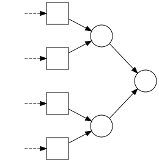
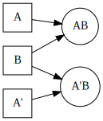
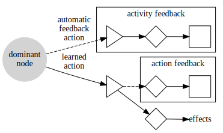
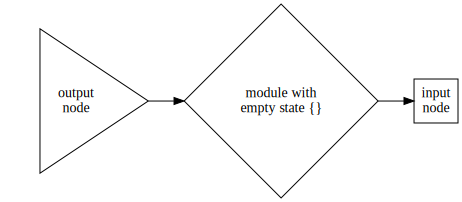
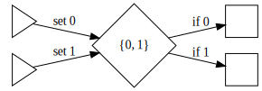
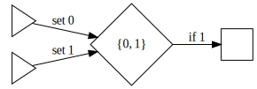
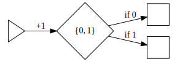

August–November 2016
I have been working on and off since 1999 on ideas and programs with the aim of eventually achieving artificial general intelligence (AGI).
This is a write-up of my current thoughts, approaches, and designs. While we don’t have a working AGI system yet, it seems like a good idea to share the state of my research with others.
From the beginning my goal has been to come up with software running on commodity computers that demonstrates some intelligent behavior. It’s not about rivaling humans at typical human activities such as playing games or classifying images. It’s about demonstrating modest but real bits of general intelligence.
We’ll define general intelligence, or intelligence for short, within the following informal framework:
Within this framework, we define general intelligence as:
A system’s intelligence is measured by how fast it learns to optimize the objective function in an arbitrarily new environment, compared to a younger version of itself.
An example of an arbitrarily complex environment is a setup where multiple systems compete for a resource, such as food. Each system views the other systems as part of the environment. When a system’s objective function, or health, becomes too low, it is removed from the environment and the healthiest of the systems is cloned.
In our framework, the world \(W\) is partitioned into a system \(S\) and an environment \(E\):
\[ W = S \oplus E \]
The state of both the system and the environment changes over time, but their interface remains compatible. This means that any state of the system can be combined with any state of the environment, for evaluation purposes.
Let \(\phi(t_0, E_0, S_0, t) \in [0,1]\) denote the application of the objective function \(\phi\) to the initial conditions \(t_0\), \(E_0\), and \(S_0\), and to the date \(t\). \(t_0\) is the origin of time, \(E_0\) is the initial state of the environment \(E\), and \(S_0\) is the initial state of the system \(S\).
Given \(t_1\) and \(t_2\) future dates such that \(t_0 < t_1 < t_2\), the performance \(\lambda\) of the system from \(t_1\) to \(t_2\) is given by:
\[ \lambda(t_1, t_2, E_1, S_1) = \int_{t_1}^{t_2} \phi(t_1, E_1, S_1, t) dt \]
where \(E_1\) is the state of the environment at \(t_1\) and likewise, \(S_1\) is the state of the system at \(t_1\).
The intelligence \(I\) of the system \(S\) can be defined by comparing the performance of the naive system \(S_0\) with the more experienced system \(S_1\) starting in the new environment \(E_1\).
\[ I(t_0, t_1, t_2, E, S) = \lambda(t_1, t_2, E_1, S_1) - \lambda(t_1, t_2, E_1, S_0) \]
This is straightforward to compute if we can save and restore the state of the world, i.e. if such world is a simulation in our control.
Note also that according to this definition, a system is intelligent if from \(t_0\) to \(t_1\) it learns something useful for dealing with the environment encountered from \(t_1\) to \(t_2\). A system that performs already well at \(t_0\) but can’t learn anything new won’t be considered intelligent even if it outperforms most other systems for optimizing the objective function. Humans might refer to such individual as wise, but as far as we are concerned, it is no longer capable of general intelligence.
Our framework is based on a separation between a system and its environment. This matches the view that the human intelligence is determined by the brain, located in the human body which has clear physical boundaries.
An intelligent system is fundamentally open as it exchanges information with its environment, by definition. By modifying the environment to improve its success, the system can become intimately dependent on it. Tools and cooperation are prime examples of co-evolution of an intelligent system and its environment.
Tools are external resources that are not typically treated as part of the intelligent system, but are key to a more efficient use of the environment by a system who learned to use those tools.
Cooperation can emerge when other intelligent systems exist in the world and they benefit from working together. Groups of humans are typically not considered as sharing a brain, despite living in organized societies with individuals having widely different roles. This is highly beneficial to the group. Indeed, single humans having to sruvive without contacts with other humans, even with some tools, tend to do much more poorly than as an organized group.
The expectation of tools and cooperation are reasons why a good, general definition of intelligence may not define a system as a clear-cut piece of the world. Instead, one might want to base a definition of intelligence on notions such as the time it takes to obtain information, regardless of whether this information is obtained by sensing, by reasoning, or by querying resources using some language.
It seems that we could obtain a simpler definition of intelligence by eliminating the complex framework required to by the system/environment model, which we haven’t even tried to define formally.
Note that we may not need a formal definition of intelligence in order to design and implement software that achieves our goal of AGI. We’ll stick with the system/environment model as it corresponds closely to how machines are defined and constructed.
General intelligence is the ability to become familiar with arbitrary structures.
This view focuses on two main notions. The first one is that knowledge about the world can be modeled as some sort of graph that relates different concepts. The second notion is that not only any kind of knowledge can be acquired, but also that with enough exposure to the relevant information, an intelligent system can become capable of quickly making predictions and turning them into assumptions. For example, when seeing four fingers from a partially hidden human hand, one assumes unconsciously that there is a fifth finger hidden.
In contrast, statistical learning or machine learning would lack the mechanisms allowing it to make good predictions for arbitrary data, hence the more restricted definition of learning:
Learning is the ability to become familiar with some structures.
Cognitive activities such as imagination, intuition, and unconscious bias are related and are characteristic of all systems capable of learning. Among them, systems capable of general intelligence distinguish themselves by the ability, given enough time, to correct or override unconscious bias.
General intelligence is characterized by the ability to develop new behaviors and to adopt or maintain a behavior independently from the immediate environment.
This characterization of intelligence is not a full definition, but more of a necessary condition of how a system should work internally for the system’s creators to maintain a hope of achieving general intelligence.
A related definition mentions goals rather than behaviors but we treat them as roughly equivalent. A behavior is a way of a achieving a goal. It can be seen as the activation of a subsystem and the maintenance of this state for as long as the system is pursuing the goal. By preferring the term behavior over goal, we wish to leave aside the questions of consciousness and free will.
A simple example is the decision for an animal to climb a mountain even though it requires a lot of energy. A naive individual might simply try to avoid going up whenever possible because it consumes energy, which requires finding more food. A more experienced individual may however push itself to go against its original instinct to not go uphill, and this would require a behavior or goal that could be called “exploration”. A long-term benefit would be to find a more prosperous valley on the other side of the mountain. Achieving this result necessitates adopting an originally unintuitive exploratory behavior. Once the whole mountain range has been explored, though, the system should switch to another behavior such as exploiting the newfound resources, while not spending too much effort climbing mountains.
Successful software architectures are made up of components that can be tested independently. The reason for that is not structural. The human brain works extremely well despite a very intricate structure. However the human brain is not a machine in the sense that it wasn’t designed, built, and modified by engineers. Instead it evolved in the least efficient way, which happens to be how some programming beginners modify existing programs: by single mutations and repeated trial-and-error over the whole system. In the case of the human brain, it’s a process involving the life of one or multiple human individuals who carry a new version of a gene or some other genetic variant. Given favorable testing conditions in the environment, the proportion of individuals with this version of the gene will increase or decrease within the population, generation after generation. So it is possible to change a random line of code in a program and run the whole program in many possible scenarios. However, it is not only very slow to introduce new features or fix problems this way, it also results in incomprehensible source code that forces future engineers to adopt the same slow trial-and-error approach.
In short, good software engineering practices must be used. The system is made up of components. Each component interacts with other components via a clear interface and shall be tested independently from the other components. A component itself is usually made up of subcomponents, with the same property of testability.
A simpler system is not just cheaper to develop because of its reduced size. There are also fewer parameters to adjust manually, and such parameters are not always numeric. It could be that instead of one component, we have two components meant for different functions and they might slightly differ in their structure. We will try to avoid manually designing components of similar structure, whenever possible.
For our system, as well as test environments, we prefer architectures and models that are as discrete as possible. It makes computation more straightforward with digital computers and it eliminates the need for debatable thresholds to determine the boundaries of various components.
Our system’s unit of time, or tick, is defined by one computation cycle. The actual physical time it takes for the system to perform a cycle may vary. As we will eventually be concerned with interacting with the physical world, we design our system such that a computation cycle can terminate within a fixed amount of physical time, i.e. real-time, given realistic hardware.
In particular, a computation cycle will be defined such that it is trivial to decompose it into simple steps that can be performed in parallel, assuming uniform random-access memory (RAM). Thus, accessing data from anywhere in the system has a bounded, reasonable cost in physical time. RAM may be an area where modern computers already surpass biological brains and we will take advantage of it since our goal is not to simulate such brain.
Our system is made up of nodes of a small, fixed number of types. Nodes are connected together in certain ways to form a graph that allows information to propagate.
A strong design principle that we follow is that once created and connected, the function of a node can be retraced by inspecting the structure of the graph.
As a consequence, we design our system such that information propagates as an all-or-nothing signal along the edges of the graph. At a given time, a node is either active or inactive, never in an intermediate state. This is a fundamental difference with artificial neural networks (ANN).
A possible benefit from propagating only binary information is that large inactive parts of the system can remain at rest, i.e. propagate only zeros, without requiring any computation. Only active nodes are involved in computing information to propagate as ones. This is what can call the economy rule.
Economy rule: Given the subset \(S\) of nodes stricly needed to determine whether some node \(v\) should be active or inactive at the next cycle, all the nodes in \(S\) being inactive implies that \(v\) will be inactive.
Sticking to the economy rule disallows logic gates that produce ones from only zeros, i.e. unary not or neither-of activation rules may not exist.
The economy rule is implemented by inactivating all previously-active nodes unless they are activated by other nodes, of which at least one was previously active.
The number \(\lvert S\rvert\) of nodes needed to determine the state of another node is bounded. It is 1 or 2 in our current design. Therefore the cost of computing the next state of the nodes of the system is \(O(\lvert A\rvert)\) when \(A\) designates the set of active nodes at a given cycle, rather than the total number of nodes.
As envisioned, our system is made up of three major components:
The inside of the system is what carries information from the input nodes (squares \(\Box\)) to the output nodes (triangles \(\rhd\)). It views input nodes and output nodes as unordered sets, with no a priori knowledge of their role.
Input nodes and output nodes can be more or less built-in, depending on the implementation. In any case, IO modules (3) are independent pieces of software that can create input nodes and output nodes freely, either during system initialization or later, dynamically. IO modules are responsible for activating and deactivating their input nodes, and they are supposed to read the binary state of the output nodes and do something with it.
The subsystem in charge of pattern identification or perception is made up of nodes. At a given cycle or tick of the system’s clock, a node is either active or inactive. There are two kinds of nodes and they differ in the way they are activated. The input nodes, always represented by squares, are activated by IO modules. The other nodes are referred to as internal nodes or regular nodes and are activated by a pair of other nodes.
The diagram below shows 4 input nodes and 3 internal nodes.

An internal node can be created from any pair of nodes. For instance it could be one input node and some other internal node:
The slightly more complicated example below shows various ways to connect nodes.
It takes one tick of the clock to propagate information along an edge. An internal node \(C\) constructed from nodes \((A,B)\) is active at date \(t\) if and only if nodes \(A\) and \(B\) are active at date \(t-1\). It is inactive otherwise.
Once an internal node is created, it will always receive information from the pair of nodes it was constructed from. It is an indicator of the current and recent input and implements a concept.
Given some input nodes, infinitely many internal nodes can be constructed. The key of a successful design is to construct internal nodes that represent useful concepts or that are involved in the construction in useful concepts, without creating too many nodes that are either redundant or not useful.
The diagram below shows how two internal nodes can be equivalent in the sense that their activity state is the same for any input. These are nodes denoted ABCD and ACBD, which are active at date \(t\) iff each of the input nodes A, B, C, and D are active at date \(t-2\).
More undesired redundancy could occur when multiple input nodes are equivalent. Since these input nodes are given and may not be removed from the system, we need a way to avoid producing redundant internal nodes. Here is such a case, where we assume that A and A’ are always active at the same time. We do not want to end up with the following construction where AB and A’B are equivalent:

At this point, the best idea we have about what makes a good internal node are those two properties:
We define the similarity of the activity of two nodes \(A\) and \(B\) over a time window as the Jaccard index \(J(\alpha(A),\alpha(B))\). \(\alpha\) denotes a sequence of dates at which a node is active:
\[ \alpha(A, t_1, t_2) = \{ t \in [t_1, t_2] | A\ \mathrm{is\ active\ at\ date}\ t \} \]
\(J\) is the ratio of the frequency at which both nodes are active to the frequency at which at least one node is active:
\[ \begin{align} J(\alpha(A), \alpha(B)) &= \frac{\lvert \alpha(A) \cap \alpha(B) \rvert} {\lvert \alpha(A) \cup \alpha(B) \rvert} \\ &= \frac{\lvert \alpha(A) \cap \alpha(B) \rvert} {\lvert \alpha(A) \rvert + \lvert \alpha(B) \rvert - \lvert \alpha(A) \cap \alpha(B) \rvert} \end{align} \]
Example:
\(\alpha(A) = \{ 3, 5, 6, 9, 10, 12, 14, 15 \}\)
\(\alpha(B) = \{ 3, 4, 6, 9, 10, 11, 14 \}\)
\(\alpha(A) \cap \alpha(B) = \{ 3, 6, 9, 10, 14 \}\)
successive states of A: 00010110 01101011
successive states of B: 00011010 01110010
\(\lvert \alpha(A) \rvert = 8\)
\(\lvert \alpha(B) \rvert = 7\)
\(\lvert \alpha(A) \cap \alpha(B) \rvert = 5\)
\(J(\alpha(A), \alpha(B)) = 0.5\)
Note that the frequency at which neither \(A\) nor \(B\) is active has no impact on their similarity.
Another criterion for deciding whether to create a node is its importance. The importance of a node can be captured by evaluating the degree of control of the system’s objective function or mood following the activation of the node. The intuition is that such a node can be a sign that some dramatic, hard-to-control changes in the environment are about to occur because it has been like this historically. The existence of this node gives us an opportunity to perform an action upon its activation, and it may help control the situation. We loosely refer to quick changes in the system’s mood as stress.
Given a system-global objective function referred to as mood or \(\phi\), we define stress over a time window \([t_1, t_2] \subset \mathbb{Z}\) as the total variation of \(\phi\) divided by the window length:
\[ \mathrm{stress}(\phi, t_1, t_2) = \frac{ \sum_{t = t_1}^{t_2-1} \lvert \phi_{t+1} - \phi_{t} \rvert } {t_2 - t_1} \]
An input node or an internal node holds a binary reversible state that we call maturity. An internal node can only be created from two mature nodes.
A node \(A\) is mature iff the following properties hold:
At any given time, one of the active nodes is designated as the dominant node. The dominant node is meant to represent the concept that is most relevant to the current situation.
There is no strict definition of the rules for choosing a dominant node at this time. A possibility is to compute a score for each active node and choose the node with the highest score. Such score would combine:
Term (1) is meant to favor nodes that are more important because a difficult situation is likely to follow. Term (2) is meant to favor the nodes most specific to the current situation while preferring nodes that have been dominant before, giving them a first-mover advantage.
The construction rule could be as follows: At each cycle, the score used to determine the dominant node is computed for each active node. A new node is created from the top two nodes \(D_1\) (dominant) and \(D_2\) iff the following conditions hold:
The computation of \(\alpha(D_1)\) and \(\alpha(D_2)\) is delicate since the obvious, naive approach would consist in memorizing all the dates at which each node was ever active, which could take too much memory. A simple workaround is to only memorize the last 100 dates or so using delta encoding to reduce space requirements, and work out an estimate of the Jaccard index \(J\) using only this recent data.
Given a set of nodes \(V\) and a set of output nodes \(W\), determine by trial-and-error a mapping from \(V\) to \(W\) that maximizes our global objective function \(\phi\) over a period following each action picked from \(W\).
\(V\) are internal nodes, which at a given instant are either active or inactive. Some or all active nodes from \(V\) are allowed to perform an action triggered by an output node. Among the internal nodes, some are not yet permanently bound to a specific output node while others may have have established a stable connection to a particular output.
The challenge is that initially the output nodes are not connected or clustered in regions. There is no a priori knowledge of which pairs of output nodes are likely to produce similar outcomes. A simple example would be 10 output nodes, each corresponding to a specific speed of a vehicle in the set \(\left\{ 0, 1, \dots, 9 \right\}\). In this simple case, we know that speeds closer to 5 are 4 and 6. However the system doesn’t know this initially. We want the system to find out by itself that when some nodes from \(V\) are equally successful with two outputs \(w_1\) and \(w_2\), this indicates that \(w_1\) and \(w_2\) are similar, for this specific level of success.
We wish to connect a set \(W\) of outputs into a labeled graph that can be used to quickly explore and find a good output for a given internal node in \(V\). The graph shall be similar to a map, where the time it takes to follow an edge is constant and the label associated with the edge is the estimated distance between the nodes. The distance between two nodes \(w_1\) and \(w_2\) is denoted \(d(w_1, w_2)\).
Although output nodes typically don’t belong to an Euclidean space, the metric may be locally compatible with a Euclidean space of some dimensionality. We’ll refer to this idea informally as local dimensionality, even though we don’t have any explicit representation of coordinates at any time. We define the locality of a node \(w\) as the set of nodes at a certain distance from \(w\):
\[ \mathrm{locality}(d_1, d_2, w) = \{ u \in W\ |\ d_1 \le d(u, w) \le d_2 \} \]
where \([d_1, d_2]\) is a range of distances.
All distances are normalized into \([0, 1]\). We define a partition of the nodes of the graph into a small number of bins corresponding to increasing distances from node \(w\). The boundaries of the bins are adjusted such that the population of the bins increases exponentially as the distance increases.
For example we could define 5 bins of the following relative sizes:
We might find that the radiuses that define the boundaries of these buckets should be set as follows in order to satisfy the ratios listed above:
In practice the goal is to estimate how many nodes of the graph fall into each bucket, and adjust the bucket boundaries to ensure the exponential distribution that we want to adopt.
Each bucket will be used to actually hold a few samples only. These samples are neighbors of \(w\) within the range defined by the bucket, and they shall be as distant from each other as possible. They shall represent directions or local dimensions worth exploring. The hope is that locally, only a small number of dimensions are relevant and thus only a small number of well-chosen nodes would be put into each bucket. Let’s consider a bucket denoted \(B_i\) and nodes \(u\), \(v\) that would fall into that bucket:
\[ \begin{align} d(w, u) & \in B_i \\ d(w, v) & \in B_i \end{align} \]
\(u\) and \(v\) may be put into the bucket only if they are distant enough from each other. Assuming that the distances are locally compatible with a Euclidean space, a safe minimum distance is \(\sqrt{2}\) times the radius:
\[ \begin{align} d(u,v) & \ge \sqrt{2} \max(B_i) \\ \end{align} \]
where \(\max(B_i)\) denotes the maximum radius or upper bound of bucket \(B_i\).
The hope is to end up for each given node \(w\) with such collection of buckets, each holding a sample of nodes at different radiuses. Each bucket has a different granularity, and its own local dimensionality, which indicates different directions worth exploring.
An example of a very simple topology is a circle. Given 3 buckets \(B_1\), \(B_2\), and \(B_3\), here’s is how bucket elements could be distributed along the circle:

Note how \(w\) is connected to two nodes in the shorter ranges \(B_1\) and \(B_2\) but can only be connected to one node in the longer range \(B_3\). In practice we expect to have to deal with more complex topologies, but hopefully not with a large number of dimensions locally. A ribbon for instance, at small scale resembles a 2-dimensional Euclidean space, but at large scale it is 1-dimensional. Conversely, a spider web is 1-dimensional at small scale but 2-dimensional at large scale.
This design would allow both reach and accuracy:
We have a set of nodes \(V\) and a set of output nodes \(W\). Both sets are growing and are initially nonempty.
At each cycle, the nodes that can trigger actions by activating outputs are the following:
All these nodes that trigger actions are subject to reinforcement after a number of cycles.
Only the dominant node may not be already connected to a very successful output. Such node is in a learning state and the system needs to decide which output to activate.
A learning node \(v\) keeps track of the previously chosen output \(w_p\) and the currently chosen output \(w_c\). It also keeps track of the feedback obtained after previous activations, for both \(w_p\) and \(w_c\). Feedback is the variation of the mood function \(\phi\) collected some fixed amount of time after the action. Feedback is collected multiple times until a reliable average can be obtained.
If the feedback obtained with \(w_p\) and \(w_c\) is similar, we create or reinforce an edge from \(w_p\) to \(w_c\) in \(w_p\)’s bucket \(B_i\) corresponding to this level of success, and we do the same from \(w_c\) to \(w_p\). The average feedback obtained with \(w_p\) and \(w_c\) is treated as an estimate of the distance between these output nodes.
\(w_p\)’s bucket \(B_i\) contains a number of outputs which should be at a sufficient distance from each other to limit redundancy. For that, we keep track of the distances ever (or recently) estimated between pairs of outputs for any node in \(V\). If at any time we find that distances between members of bucket \(B_i\) are too short for this bucket, i.e. shorter than \(\sqrt{2} \max(B_i)\), one of these members is excluded from the bucket.
If the feedback obtained for \(w_p\) is better than the feedback obtained with \(w_c\), \(w_c\) is replaced by another node taken from the bucket corresponding to \(w_p\)’s average feedback, if such node hasn’t been already probed and discarded by \(v\). Otherwise, an output is picked randomly from \(W\), or possibly picked from a high-priority subset, such as outputs that are not well connected to the other outputs yet.
If the feedback obtained for \(w_c\) is better than for \(w_p\), the same steps are taken and \(w_p\) ends up being replaced by an output taken from a shorter-range bucket of \(w_c\), or by a random output.
In conclusion, the plans for this part are rather fuzzy at this time. Related problems or solutions include:
Possible future directions:
The success of the approach rests upon having relatively few members per bucket, i.e. having low local dimensionalities at any scale.
High dimensionalities can arise when many independent outputs exist. An example would be a large number of pairs of outputs that set or clear a bit used as explicit memory (see section on IO modules). I suspect that large memory arrays cannot be used effectively by an intelligent system without resorting to special-purpose algorithms.
The best we can do is report situations where a bucket is getting full, and correct the design of the system by not creating the problematic outputs.
We can also set a maximum bucket capacity, in which case the optimization speed is expected to degrade. The exact nature and impact of such degradation is unclear at this time.
An IO module is a bundle of input nodes and output nodes. It controls the activity of its input nodes and performs actions that depend on the state of its output nodes.
Automatic IO modules are meant to be created by the core implementation of the system, as the system grows in a certain way.
Other IO modules can be implemented as optional plugins which would either not create new inputs or new outputs after the initial setup or grow somewhat independently from the rest of the system.

An activity feedback module consists in one input node for each node \(v\) that has ever been a dominant node. This input node is activated each time \(v\) becomes active and dominant. It allows the system to sense that a certain node was dominant.
An action feedback module is an input node connected to an output node. It allows the system to sense that a certain action was triggered.
For each once-dominant node, a reminiscence module is created as shown above. Each time the node is active again (dominant or not), the input node is activated. That same input node can be activated via a dedicated output node chosen by any dominant node. As a result, the input node is always active one tick after the original node and can also be activated artificially, triggering the same effects as a natural activation.
It’s not clear how useful these simple modules are in practice or how many of them we would create.

This module would provide a simple loop, ultimately allowing different nodes to activate the same input node.

This is a memory module that can hold one bit. One output node sets the bit to 0 and another sets the bit to 1. The state is read by two input nodes, i.e. at any time exactly one of the input nodes is active.

This is a simplified form of the single-state module described above. It has only one input node, activated when the state is 1.

This module holds a bit whose value flips each time the output node is activated.
A grid of cells with binary states is planned to be used for testing pattern recognition, which consists in the part of the system that includes input nodes and internal nodes and excludes actions.
To the system, the inputs are not structured in a grid initially and it should learn to identify relevant patterns. More specifically, we can feed the system with a sequence of images. There’s one input node per pixel and we leave the image for several cycles, before deactivating all the input nodes for several more cycles and switch to a new input image.
We would observe the dominant or near-dominant nodes, and check that similar images result in the same dominant node. With the proper training, the system should be able to learn how to distinguish classes of images that exhibit their own characteristic pattern, regardless of how variable the other parts of the image are.
The advantages of working with a small discrete 2D grid are the following:
Let \(W\) be a set a elements, and \(d\) a metric on \(W\). Let \(R\) be a sequence of elements taken from \(W\).
A system playing the game is given the identifiers of the elements in \(W\) but \(d\) and \(R\) remain hidden from the player by the operator of the game.
The goal of the game is to guess the elements in \(R\), one after the other, as required by the operator, and doing so in as few guesses as possible. The attempts at guessing one element correctly is called a round. A game is a sequence of \(|R|\) rounds.
A guess for the hidden element \(r_i\) consists in:
The round ends when the guess is correct, i.e. when \(d(w, r_i) = 0\).
The goal of the guessing game is to evaluate the part of our AGI system that searches for appropriate actions for a given active internal node. Feedback collected after the action is interpreted as a distance that we try to minimize. The Guessing Game represents an ideal world where the feedback from each action triggered by a given node is always the same and where a perfect action exists for each node.
The system should be able to figure out the topology of \(W\) and ways to navigate \(W\) more and more efficiently as it gathers distance information.
Simple examples are swarms of points embedded in euclidean spaces, such as the following:
There are two major goals in setting up a framework for evaluating the intelligence of a system:
In order to satisfy the observability requirements, a simulated environment is probably a better choice than having the system interact with our physical world. A discrete world with its own made-up physics is also likely to be a better choice than having to model continuous properties, because the inputs and outputs of our system are discrete. Avoiding conversions between analog and digital signals should simplify a number of things.
The other goal is to provide an environment that is complex enough to require the use of intelligence. An idea here is to have multiple systems compete for resources within the same world. From the perspective a system, the other systems or individuals are simply a part of the environment.
The envisioned test world would be set up as follows:
While there’s no expectation to evolve systems using some sort of natural selection or genetic algorithm, this setup naturally allows it.
It seems reasonable at this point to pick one testable component of the system, refine its design and implement it. Current candidates include: